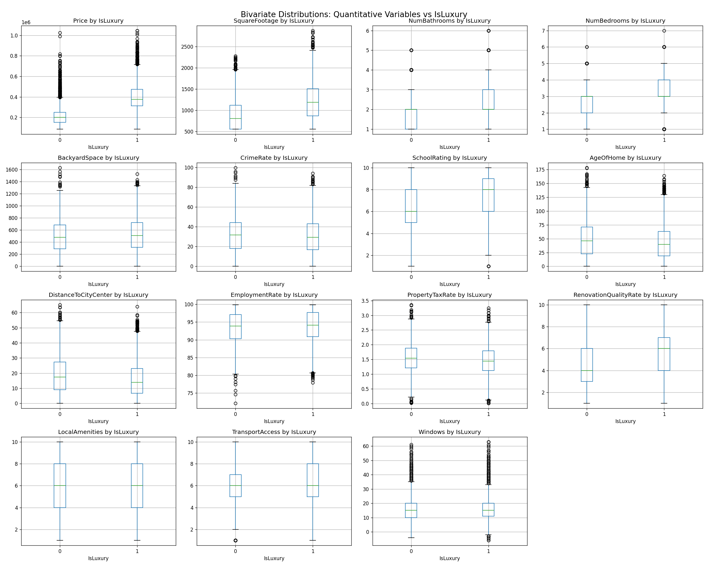

Data Analytics & Data Engineering
D'Andre McNeish
I build reliable data pipelines, cloud data architectures, and predictive models that turn raw data into decisions organizations can act on.
I build reliable data pipelines, cloud data architectures, and predictive models that turn raw data into decisions organizations can act on.
I am a data analytics and data engineering professional pursuing a Master of Science in Data Analytics and Data Engineering at Western Governors University, building on a Bachelor of Applied Science in Data Analytics and Artificial Intelligence from Broward College. I hold the WGU Data Analytics Professional Certificate, demonstrating hands on competence in the full data analytics lifecycle, statistical data mining, and data storytelling.
My project work spans building production style ETL pipelines in Apache Airflow, designing cloud data warehouse architectures on Google Cloud Platform, applying linear and logistic regression and principal component analysis to real business scenarios, and tracking reproducible machine learning experiments with MLflow and DVC.
Alongside my studies, I work in product enablement at Modernizing Medicine, where I lead AI adoption efforts, build LLM powered internal tools in Python, and use JQL and Salesforce reporting to analyze operational data and resolve process bottlenecks. I am looking to bring that same combination of technical depth and clear communication to a data analytics or data engineering role.
Awarded by Western Governors University for demonstrated competence in the data analytics lifecycle, statistical data mining including linear and logistic regression and principal component analysis, and data storytelling for technical and non technical audiences, including designing interactive dashboards for executive decision making.
View verified credential →Nanodegree program certificate awarded by Udacity for building a production style ETL pipeline in Apache Airflow, including custom operators for staging data from Amazon S3, loading a Redshift data warehouse, and running automated data quality checks.
View verified credential →
Designed a Google Cloud Platform architecture and normalized logical data model for an enterprise data solution, then implemented it in BigQuery with a nested transaction schema, loaded real records, and wrote analytical queries to support business decisions.

Applied a supervised linear regression approach and a deterministic principal component analysis to reduce dimensionality and generate business recommendations from a real world dataset, as part of the WGU Data Analytics Professional certification work.

Built a reproducible machine learning pipeline for flight delay prediction with versioned data using DVC, tracked experiments and metrics with MLflow, and automated testing and deployment through a GitLab CI/CD pipeline.
Engineered four custom Apache Airflow operators and a fully orchestrated DAG that stages JSON data from Amazon S3, loads it into an Amazon Redshift data warehouse, and runs parametrized data quality checks with automatic retry on failure. Completed as a verified Udacity nanodegree certificate.
Wrote a Python program to implement and analyze an organizational program dataset, producing structured output used to evaluate program effectiveness and support data driven decisions.
Authored business requirements, key monitoring components, and a continuous monitoring plan for an enterprise data pipeline, covering benchmarks, troubleshooting procedures, and the business benefits of proactive data quality monitoring.